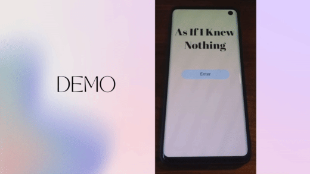

As If I Knew Nothing is our HCI solution to the problem “How can I be certain that I thoroughly know this topic well enough to explain it effectively?” By using our application, the user describes whatever they are trying to communicate
effectively by explaining it to a stranger first. The stranger would then reply with their interpretation and feedback which is then passed back to the user to help them gauge the clarity of their explanation and make refinements if necessary.
Our application only allows for 1 message to be sent by each participant to generate a high level of detail and succinctness. Through this unique form of communication and collaboration, the true test of how well you know a topic is validated.
1. Design Ideas
The first iteration of our design process consisted of each group member sketching their initial ideas for the project. Here, our Top 10 sketches are shown.
2. Refined Sketches
After discussing the initial sketches we decided to focus on refining the As If I Knew Nothing Idea.
3. Final Product

After deciding on “As If I Knew Nothing”, we decided to refine the idea further. From our refined sketches we decided to implement sending compensation as a reward, being able to send images in addition or in lieu of text, and requesting help specifically
from a stranger who is also an expert. There were many other ideas from our refined sketches that we wanted to pursue like the level up system, choosing form of compensation, sending voice clips, and the ranking system, but we decided
to focus on these specific implementations for our prototype. This is due to us believing that they are of higher priority and we consider them to be minimum viable products for our app. Unfortunately due to personal constraints like starting
our careers and things like moving away, we had to focus on finishing this for the last week of school and could not utilize the extended hand-in date. We are still very happy with our end-product and our solution to a very common problem.
Our creative solution “As If I Knew Nothing”, which allows a single message to and from 2 people allows for enhancing communication and collaboration in a way we have never truly seen before. Please enjoy our project video, which contains
our project demo.
My contributions:
Sketched design ideas that were eventually included in the final implementation
Participated in voting for top ideas/sketches after completing the initial and refined sketches
Worked with Daniel to plan and film the storyboard
Worked with Daniel and Marela on the Figma prototype
Recorded voice clips to be used in final video demo